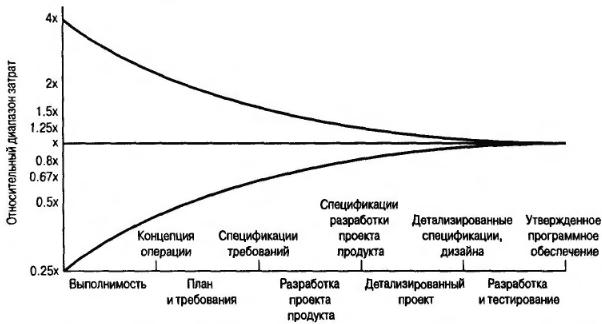

Проблемы и риски, связанные с оцениванием размера ПО
Проблемы, возникающие в процессе оценивания
- проблема может быть недостаточно хорошо понята разработчиками и/или заказчиками из-за того, что некоторые факты были упущены или искажены из-за предвзятого отношения;
- недостаток либо полное отсутствие исторических данных не позволяет создать базу для оценок в будущем;
- специалисты-оценщики могут потерпеть неудачу при попытке описания того, насколько большой может быть система, еще до ее создания или даже еще до этапа разработки проекта;
- проектирующая организация не располагает стандартами, с помощью которых можно выполнять процесс оценивания (либо в случае наличия стандартов их никто не придерживается); в результате наблюдается недостаток совместимости при осуществлении процесса оценивания;
- согласно требованиям менеджеров и/или заказчиков, необходимо быстрое оценивание, и в этой ситуации важно понимать, что возможно непосредственное создание программного кода, минуя этапы анализа и разработки проектов;
- менеджеры проектов полагают, что было бы неплохо фиксировать требования в начале осуществления проекта, заказчики же считают, что не стоит тратить драгоценное время на разработку спецификации требований;
- при осуществлении менеджмента используются оценки с целью повышения производительности или достижения мотивированных целей;
- разработчики желают получать удовольствие от результатов менеджмента, а также находиться с заказчиками на равных;
- ошибки, как правило, будут скрытыми вместо того, чтобы оцениваться и отображаться, в результате чего создается ложное впечатление о фактической производительности;
- возможности оценивания существенно зависят от субъектов, вовлеченных в процесс внедрения;
- предварительное оценивание и составление предписаний рассматриваются в качестве целей исполнения; оценивание выполняется на подготовительном этапе, т.е. еще до того, как завершится исследование понятий;
- между предполагаемыми и реальными предписаниями возникают конфликты;
- повторное оценивание кажется излишним;
- для достижения желаемой четкости в функционировании других частей системы (интерфейсов наследственной системы, аппаратного обеспечения и т.д.) может потребоваться дополнительное ПО, что скажется на размерах программного продукта; имеет место недостаточно четкое представление об ограничениях как на уровне системы, так и иного рода;
- менеджеры, аналитики, разработчики, тестеры и те, кто внедряет продукт, могут бытовать самые разные представления о процессах оценивания и о возможностях совершенствования рассматриваемого продукта.
Итак, сложный и нелегкий процесс прогнозирования размеров программного продукта можно охарактеризовать с помощью проектных рисков.
Риски оценивания
Большинство типичных рисков, связанных с процессом создания программного продукта, возникают при оценивании размера, трудозатрат, стоимости работ и графиков по их выполнению. Причем в основе этих рисков лежат "проблемы, связанные с оцениванием".
Некоторые риски управления программными проектами, связанные с оценкой его размера
Если оценки неполные или некорректные, возникает очевидная угроза потерять заказчиков, а возможно, и утратить перспективы развития всего бизнеса. Столь же серьезные последствия имеют и ошибки при определении стоимости работ (в случае, если контракт заключается с указанием заранее оговоренной суммы). Слишком оптимистичные оценки могут привести к существенным финансовым потерям (возможно, даже в крупных размерах), а также к потере доверия со стороны клиентов.
Неверные оценки приводят к изменениям графика, к необходимости резко сокращать временные рамки выполнения работ, что зачастую приводит к существенным недоработкам в готовом проекте.
Возможности уменьшения степени риска, связанного с оценкой размера ПО.
Способы уменьшения влияния рисков, связанных с оценкой размера ПО
Многие из этих методов широко используются в практике:
- обратитесь к WBS, используйте самый малый уровень из возможных, применяйте подход "разделяй и властвуй";
- учитывайте то, что меньший размер компонентов способствует облегчению задачи оценщика;
- выполните обзор требований с учетом всех "отягчающих обстоятельств", включая выполнение действий, поддержку и сопровождение;
- если это возможно, различные предположения заменяйте информацией, основанной на опыте по организации подобных работ. Этот подход можно использовать и при отсутствии исторически конкретных данных. Самые невероятные случаи можно исключить из рассмотрения;
- необходимо поддерживать тесное сотрудничество с разработчиками других системных компонентов (возможно, при выполнении работы в параллельном режиме), причем желательно использовать единый понятийный аппарат;
- через определенные интервалы необходимо изменять оценки. Точность оценивания улучшается на протяжении всего жизненного цикла разработки ПО;
- с целью повышения степени доверия к получаемым результатам используйте несколько методов оценивания размера ПО;
- повышайте уровень квалификации разработчиков, широко используя методику оценивания размеров ПО.
Барри Боэм (Barry Boehm) и Каперс Джонс (Capers Jones) составили графические диаграммы, на основе которых можно сделать вывод, что уже на ранних этапах жизненного цикла можно успешно реализовывать оценку размера ПО. При этом становится возможным рассматривать перспективы эволюции первоначальных решений, принимаемых при работе над проектом. Если заказчики требуют приблизительных оценок, им следует учитывать, что в этом случае невозможно достижение большой степени точности. Обычно погрешность этого метода оценивания составляет 35% от конечной реальной величины (которая может представлять размер/объем затрачиваемых усилий / уровень выполнения графика работ / объем затрат). Этот метод чаще приводит к получению заниженных оценок размера ПО (см. рис.16.1).

Рисунок 16.1 - Точность оценивания размера ПО